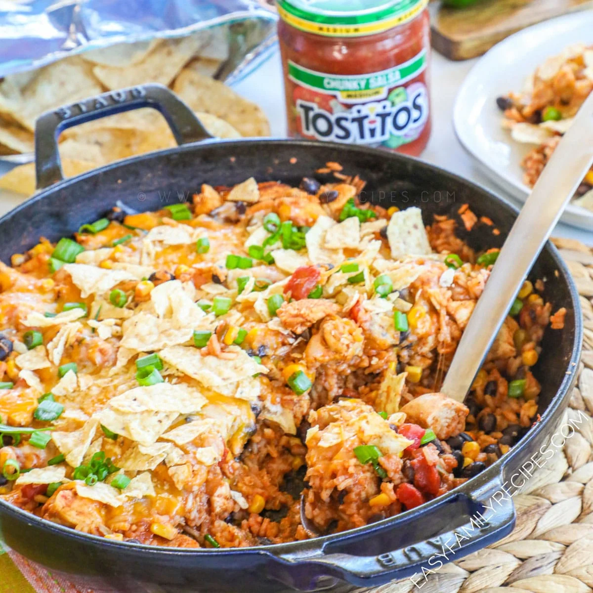

Burrito Skillet

Description
Below is a recipe for a burrito skillet. This has many of the same ingredients as a burrito, but is made in a one-pot style
This recipe can be modified in several different ways. For example, we have started using ground turkey instead of ground beef recently.
Ingredients
- Ground Beef or Turkey
- Black Beans
- Rice
- Corn
- Shredded Cheese Blend
- Primal Kitchen Ranch
- Salsa
- Chips (on the side)
- Avocado (optional)
Steps
- Brown the meat in a pan
- Once meat is cooked, add in cooked rice and mix to combine
- In a bowl, combine the beans, corn, salsa, and ranch
- Combine the bean/rice/corn mixture with the meat and rice in the pan
- Top with cheese, and bake in the oven at 400F for 25 minutes
- Top with avocado, and additional salsa if needed
- Serve with chips on the side